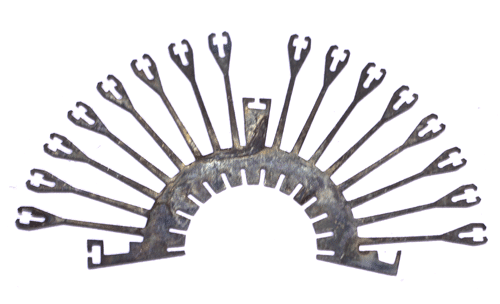
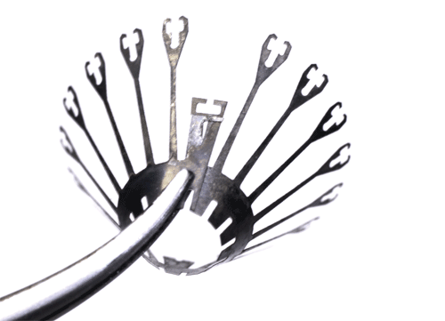
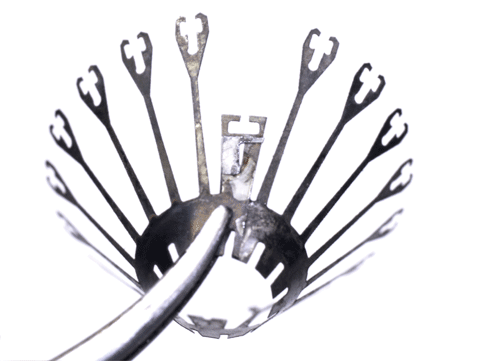
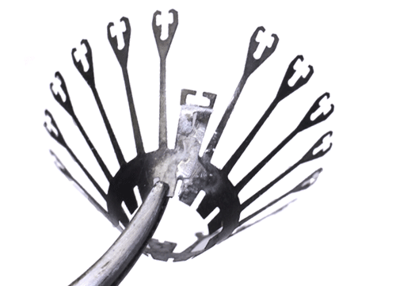

Assemble the spring
The spring steel is prone to rusting if left out - ideally they should be stored away from moisture or under oil. See section on custom parts for details on how to make the spring sheets.

Thoroughly degrease the springs with ethanol or acetone before soldering and gluing.

Bend spring into cone shape and align soldering tabs. Holding it with a hemostat as shown here is a good method.
Align soldering tabs, make sure the spring is properly aligned at the top and bottom.

Apply an acid based flux (we use
stainless steel flux from McMaster). The flux should immediately remove the discoloration from the oxidation on the spring. Only apply flux where you itend to solder.
Acid based flux is dangerous - wear appropriate protective equipment.Solder the spring. Work fast to avoid overheating and breaking the spring. Ideally, dab the joint with a tinned fine tipped iron for only a fraction of a second. Notice how in the example image, no solder ended up flowing under the hemostat because no flux was applied there. Use appropriate ventilation to protect yourself from flux and solder fumes!
Remove all residual flux with ethanol.

If too much solder is on the spring, it can be removed easily using a razor blade and/or fine sand paper. If possible, don't use desoldering braid or any method that heats up the solder as this will likely mess up the alignment or break the spring.
The spring is now ready to be glued onto the drive body.